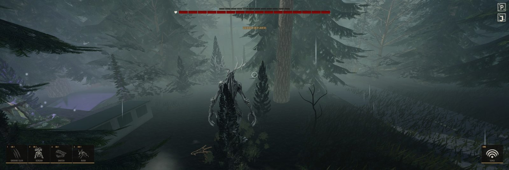
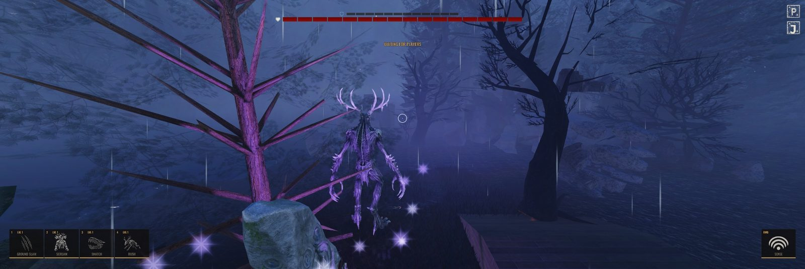
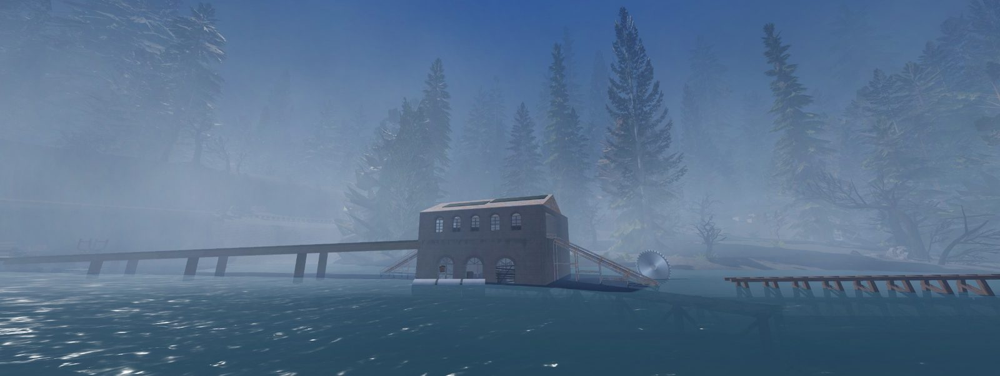
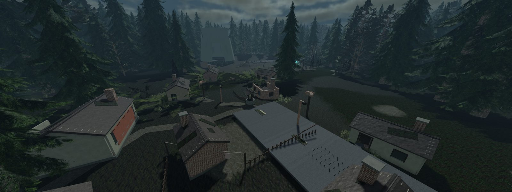
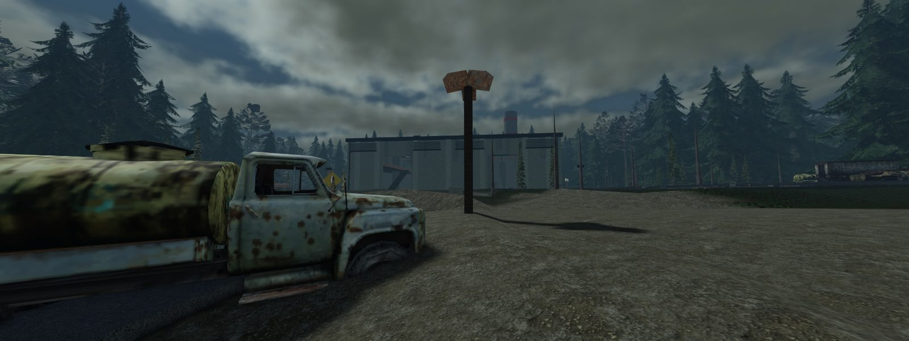
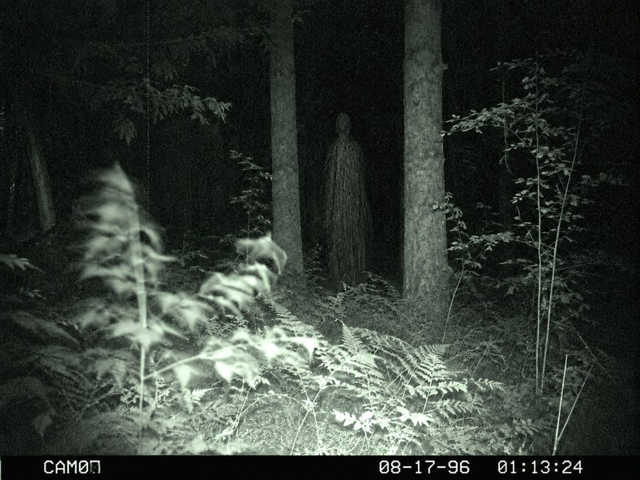

Counts measured from the project repository on 28 September 2026. First commit 3 July 2026.
Roblox has the audience for a monster hunt. Nobody has built the fight-back version.
The gap
Every asymmetric game on Roblox is a corridor chase: survivors run and hide. The appetite is proven: Forsaken, a hardcore asymmetric game, reached roughly 80,000 players at once and billions of visits. What does not exist on Roblox is the other half of the genre: armed hunters with a plan, against a monster that grows.
On PC and console that formula had a devoted audience and a famous collapse. We studied why those games died and designed BANISHED against each cause, starting with the first rule below.
The one rule
Both sides must be fun. If only one side is having fun, the game dies.
A 4v1 needs four hunters for every monster, so the hunter side carries four times the population. The bar every feature has to clear: a solo hunter with three strangers and no mic still has fun in a match they lose.
Five hand-built guns with first-person arms, aim-down-sights and authored reloads. Hunters fight back; that is the point.
A tracking economy (wound trails, birds, bells, footprints), a three-stage evolution with upgrade choices, and four classes that need each other.
Atmospheric horror, skill-based combat and short, replayable matches. Built for teens and adults who want a game with depth.
Two different games in one match
A monster player and a hunter player want different things. Each side has its own complete loop, and they collide in the fight.
Play the Monster
- Stalk. Start weak and hunted. Crouch-stalk, wall-crawl and leap through the forest while four armed players look for you.
- Feed. Kill deer, stags and bears (they fight back), and feed on downed hunters to fill your meat meter.
- Mutate. Cocoon and evolve through three stages, growing larger, tougher and stronger, and spend points to upgrade your abilities.
- Break the Relic. At Stage 3, smash the hunters' Relic, or wipe all four hunters, to win.
Play a Hunter
- Track. Read the woods: glowing wound trails, startled birds, tripwire bells, footprints, and the silence where it already ate.
- Cage. Close in and raise the team Cage, a plasma jail that pins the monster so the fight happens on your terms.
- Fight. Four classes (damage, healer, control, support) combine guns, gadgets and class abilities.
- Survive. Revive downed teammates, hold the Relic, and kill it before Stage 3, or run out the clock.
No player is ever left with nothing to do: a downed hunter crawls and calls out intel, a dead one spectates their team and respawns on a timer, and a caged monster can always pay to break out.
Two monsters, four hunter classes
The Wendigo
A gaunt spirit of famine that grows with every meal: Starved, then Ravenous, then Gorged. Ground Slam scatters a clumped team, Scream interrupts heals and floods the map with false tracking noise, Snatch drags one hunter into the dark, and Rush tramples everything in a line. Sense reveals prey through walls.
The Long Man
A second monster built on positioning and psychic pressure, pickable today. He Blinks instead of running, his Sense freezes a psychic image of the hunters, Echoes release copies of him to confuse pursuit, Long Reach drags a caught hunter while he keeps moving, and Head Pain leaves the team dazed.
| Class | Role | Weapons | Unique gear | Class ability |
|---|---|---|---|---|
| ExecutionerDamage | The threat that forces the monster to back off | Relic Rifle · Chain Whip | Brand: hits stack sigils, then detonate | Iron Resolve: a damage-soaking stance |
| SanctumHealer | All healing and sustain | Hexlock Pistol · Surgical Vial Launcher (lobbed area heals) | Healing Aura: a smashable heal field | Mending Burst: an emergency group heal |
| JailerControl | Find the monster, then pin it | Repeating Crossbow (wounds leave a glowing trail) · Tripwire Chimes (alarm bells) | The Net: a harpoon snare | Flare: lights a wide area and reveals the monster inside it |
| SageSupport | Force multiplier and protection | Consecrated Scattergun (pump shotgun) · Banishing Lantern | Decoy: a double that runs while she vanishes | The Veil: hides hunters from the monster's Sense |
Every class is two weapons, one unique piece of gear and one class ability. Every class, and both monsters, live in configuration rather than custom code, which is what makes a new character a content drop instead of a rewrite.
A forest that tells on you
Most Roblox monster games are corridors. BANISHED is an open-world stalk: information warfare across real terrain. Wildlife is a system, not scenery. Herds scatter and birds lift when the monster moves, and the woods go quiet where it has already eaten.





Two maps, live now
BLACKPINE is a dusk boreal forest with a reservoir and dam, a railbed and trestles, a mill, a flume, a quarry and a hunters' camp. BASIN 9 is a forested, abandoned nuclear-industrial disaster zone. Every match rolls one of the two.
Storms, water, day-long ambience and rare one-off sounds (a far-off wolf, a creaking pine) play on each player's own clock.
A food chain that fights back
Deer flee fast and feed a little. Stags fight back and feed more. Bears are hostile to everyone and are the biggest meal on the map. Hunters who shoot a herd leave bait behind, not a denied meal.
A world with a story
The lobby is a ranger station at the edge of a closed forest, with its own cast (Kessler, Pell and Brisco) and Case Files: missing-person posters, trail-camera photos and field notes that tell the story of what is out there, one discovery at a time.

This is not a prototype. Every system is running.
A full match runs end to end today: five players enter from the lobby, the server assigns one monster and four hunters, the match plays out on either map, and it ends on a scoreboard whose result is saved to every player's profile.
Combat and characters
- Four complete hunter kits: 16 slots, five guns with first-person arms, aim-down-sights and aimed reloads
- Inspect animations for held guns and gear, plus rare 2% reload gags
- Two monsters with full ability sets, traversal (leap, wall-crawl, crouch) and a three-stage evolution with upgrade choices
- Revives, a downed state, pings, sprint, a traversal rig with dodge bursts, and the team Cage
- Server-authoritative damage: a client never decides whether it hit
Match and online
- A match state machine: lobby, drop, hunt, contain, endgame, post-match
- Cross-server matchmaking with a global queue and teleports into match servers
- Parties that queue together, with our own invite panel and Roblox friend invites
- Role preferences with a fair monster rotation: nobody is stuck in a role they hate
- Spectating, leaver and idle handling, and a post-match scoreboard
Lobby and first-time players
- A separate, explorable lobby: find a match from anywhere, the party radio desk, the shop
- A training range with live wildlife, and a two-sided orientation course
- A guided first round, Gear Up and Field Notes archives, and Case Files lore
- Characters in the lobby who walk, work and turn to face you when you talk to them
Progression
- XP from every match drives level, eight rank tiers and titles
- Scrip currency from every match; a loss pays nearly as much as a win
- Weekly challenges on their own menu, in the lobby and in the match
- A cosmetic locker and shop, and a saved last-match summary
Every platform, its own build
- Phone: our own touch buttons with a separate layout for each role, an editable layout, touch aim assist and phone-specific HUD arrangements
- Controller: every menu works on a gamepad, with pad-specific bindings
- Computer: full keyboard and mouse, rebindable keys
- Settings: graphics presets, HUD size, reticle and audio accessibility
Running it live
- Kill switches for each map, matchmaking, the shop and rewards, flippable without a new build
- A saved record of every match: result, every player's stats and server performance
- Incident records, ban tools and server-side developer permissions
- Every request from a player's device is validated, bounded and rate-limited on the server
Engineering quality
- Every one of the 2,120 source files is strictly type-checked
- 214 automated test suites and a CI pipeline run on every change
- Tuning numbers live in config, so balance changes never touch game logic
- A full internal audit (27 September 2026) found no launch blockers
The question is no longer "is it fun?"
"All five players had genuine fun and wanted to go again immediately after the fourth match."
Proven
- Several closed beta sessions through August 2026, all positive.
- The first live five-player session on published Roblox servers, 15 September 2026: four matches across both maps.
- Every player's pay, XP and match record saved exactly once.
- Matchmaking, arrival and match records ran with no incidents.
- The server held about 60 frames a second with five players and a full herd of wildlife.
Honest about what's next
- The hunters won all four live matches, and nobody called it unfair. We tuned the monster's early game right after.
- No match has reached Stage 3 with real players yet; the next session tests it.
- The game is not public yet. Launch needs a certified release, a second live session and a real-phone performance baseline.
- Matchmaking across two live lobby servers, purchases and crash-rejoin still need proof on published servers.
Free to play. Cosmetics only. Never pay-to-win.
In a 4v1, anything sold as power ruins the match for the other four players. Power lives inside the match (the monster's evolution); identity lives outside it (skins, titles, emotes).
A two-currency cosmetic shop
Every cosmetic can be earned with Scrip, which every match pays (a loss pays nearly as much as a win), or bought with Robux. 94 priced items today:
Grind or pay: a premium monster body is about 67 matches of play, or R$400. Five Robux products are live in the build; the first real purchase on a public server is part of launch prep.
Pass, seasons and roster
- VIP pass (designed, priced at R$599): +15% match XP (never currency), extra emote slots, an animated badge and name effect, a voucher for one skin of the buyer's choice, and hosting private matches with custom rules.
- Emote-slot expansion sold on its own for R$199, or earned with Scrip.
- A seasonal cosmetic track with themed skins each season.
- New monsters and hunters unlockable with either currency.
- Monster skins stay the lead product. In this genre, monster players are the biggest spenders, and every skin is seen by the four hunters it is chasing.
Built to update every week
The machinery is in place
- Weekly challenges: five rotating sets; players pick three of five goals for XP and Scrip. This is the deliberate return hook. There is no daily login reward, because a 4v1 needs players queuing together, not just logging in.
- Case Files: 23 lore entries that reveal the story over time.
- Kill switches for purchases, matchmaking, rewards and each map, flipped live without a new build.
- Match records and analytics: every match saves its result, each player's stats and server performance, plus onboarding-funnel and shop analytics.
- Live balance tuning without a new build is built and held in reserve for after launch.
New monsters are the hype spike
- Characters are data, not code. The Long Man went from settled design to pickable in the match in about a week, without touching the Wendigo. That is the business model: a new monster is a content drop, not a rewrite.
- Monster concepts on file: the Jersey Devil (verticality), the Sasquatch (it attacks the hunters' tracking) and the Rougarou (contagion).
- A second character for every hunter class, each with its own kit.
- Dynamic map events: one announced hazard at a time (a zone closing, a storm that gives the monster cover to feed) as a cheap weekly change.
- More maps: each map is its own place that joins the queue's roll, exactly as BASIN 9 did.
87 days in, and the road to launch
- July 2026
From four grey blocks to a game
First code on 3 July; the feed-and-evolve loop the next day. Then the design thesis, the four hunter kits, saved player profiles, the BLACKPINE map rebuild, the first phone controls and the separate lobby place.
- August 2026
A full game
Cross-server matchmaking (5 August), account progression (levels, ranks, titles), the shop with Scrip earning switched on, and the second monster, the Long Man, pickable from 28 August. Several closed beta sessions, all positive.
- September 2026
Real players, real servers
BASIN 9 joins the map rotation and the Robux shop opens (3 September). The first live five-player session on published servers (15 September). Separate phone and controller layouts for the HUD, menus and controls. A full internal audit on 27 September found no launch blockers.
- Now
Launch prep
A second live session that reaches Stage 3, the final title chosen and cleared, a certified release, a real-phone performance baseline, and live proof of purchases, crash-rejoin and matchmaking across two lobby servers.
- Target: Q4 2026
Public launch
The experience goes public. This is where launch support and user acquisition make the difference, because the first weeks decide whether the queue fills.
- After launch
Season one
The VIP pass and a seasonal cosmetic track, the third monster, dynamic map events, and bots to fill an empty hunter seat so a match never waits on the fifth player.
One director, and a disciplined AI engineering pipeline
Anthony Claudio
Owns the design, the feel and every final call. Nothing counts as done until he has played it: every weapon, camera and animation in the game was accepted or rejected by him in Roblox Studio. He runs the playtests, the roadmap and the studio, Red Chevron Studios.
AI coding agents, run like a team
The code is written by AI coding agents (Anthropic's Claude Code, with OpenAI's Codex on some tasks) working under a written engineering rulebook: the server owns gameplay truth, every tuning number lives in config, and no change lands until the automated gate passes. That is how one director produced 5,256 commits in 87 days without the codebase rotting.
An original look, with receipts
Original characters, monsters, maps, logo and UI. The pipeline mixes custom 3D models and animation, AI-assisted concept, texture and sound generation, and licensed source assets. Every asset is tracked with a written receipt and published under the studio's Roblox group.
Real players, early
A closed beta group has played every major version, and a community builder, bigwuggy, has helped build the lobby from the start. Every live match writes a record of its result, each player's stats and server performance, so each session produces data as well as opinions.
A 4v1 lives or dies on having five people in the queue at once
The design problem that killed this genre elsewhere is population: a match needs five players, at once, in one queue. The game is built. What decides whether it lives is the first weeks after it goes public.
Launch-day players
Help with on-platform and off-platform user acquisition at launch turns the genre's biggest risk, empty queues, into its biggest strength: a full lobby of people who all want to go again.
Expert eyes on retention and monetization
Weekly challenges, the cosmetic shop and progression are built. We want Roblox's view of what older players stay for, and where a season track and passes should sit.
Phones and low-end devices
Phone controls and layouts are built for every role. Guidance on rendering and memory budgets for mid-range phones would shorten the road to a certified release.
The "Wait, that's Roblox?" bar
The monsters are custom-built creatures; the hunters are R15 bodies with custom outfits, gear and first-person arms. We want to push hunter fidelity further, and would value guidance on high-fidelity avatars.